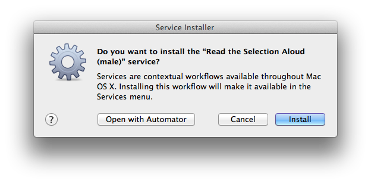
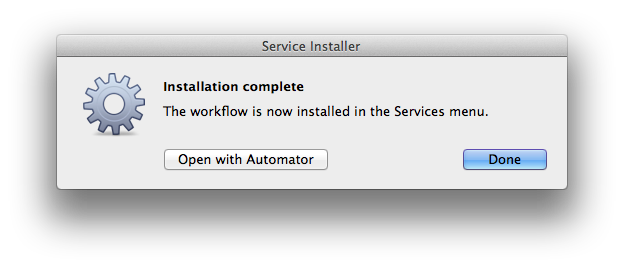

On occasion you may want to install Automator service workflow files you’ve acquired, into the system. The installation process is a simple one, requiring only a double-click and approval.
IMPORTANT: Automator workflows can be very powerful and often are granted access to important areas of your home directory and computer. Practice safe computing and ONLY INSTALL WORKFLOWS AND ACTIONS THAT COME FROM TRUSTED SOURCES.
To begin the installation of an Automator workflow service, in the Finder, double-click the icon of the Automator service workflow (shown left) you want to install. The Automator application will launch and an approval dialog, similar to the following illustration, will appear:

The Service Installer dialog offers three options (buttons):
- Click the “Open in Automator” button to open the service workflow in Automator for viewing and editing.
- Click the “Install” button to begin the process of moving the workflow file into the Services folder in your home Library folder.
- Click the “Cancel” button to stop the installation process.
Once the installer has completed the installation process, a confirmation dialog will appear. The newly installed service is ready for use, and can be optionally opened in Automator for viewing and editing.
